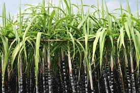

1. Land Selection: Choose a well-drained, fertile soil with good water-holding capacity. Sugarcane requires a lot of water, so access to a reliable water source is essential.
2. Variety Selection: Select a suitable sugarcane variety based on your climate, soil type, and market demand. Consult with local agricultural experts for recommendations.
3. Land Preparation: Clear the land of any weeds, rocks, or debris. Plow the field to a depth of about 30 cm (12 inches) and then harrow it to create a fine seedbed.
4. Planting: Sugarcane is typically propagated through stem cuttings known as "setts." Cut healthy, disease-free sugarcane stems into 2-3 node sections. Plant the setts in furrows at a depth of about 5-10 cm (2-4 inches) and space them about 20-30 cm (8-12 inches) apart. Ensure that the setts are planted with the bud facing upwards.
5. Fertilization: Conduct a soil test to determine nutrient deficiencies and then apply appropriate fertilizers. Sugarcane requires nitrogen, phosphorus, and potassium. Apply organic matter, such as compost or well-rotted manure, to improve soil fertility.
6. Irrigation: Sugarcane needs regular and consistent irrigation, especially during dry periods. Drip irrigation or furrow irrigation is commonly used. Ensure that the soil is consistently moist but not waterlogged.
7. Weed Control: Keep the field free of weeds, as they can compete with sugarcane for nutrients and water. Use herbicides or manual weeding as needed.
8. Disease and Pest Management: Monitor your crop for signs of diseases and pests. Common sugarcane pests include aphids, scales, and borers. Apply appropriate pesticides if necessary, following recommended guidelines.
9. Crop Maintenance: Monitor the growth of your sugarcane regularly and provide necessary support to prevent lodging (falling over). Hill up soil around the base of the plants to encourage healthy root development.
10. Harvesting: Sugarcane is usually ready for harvest 10-12 months after planting. The signs of maturity include yellowing leaves and a sweet taste in the stalks. Harvest by cutting the mature stalks at the base using a machete or a sugarcane harvester.
